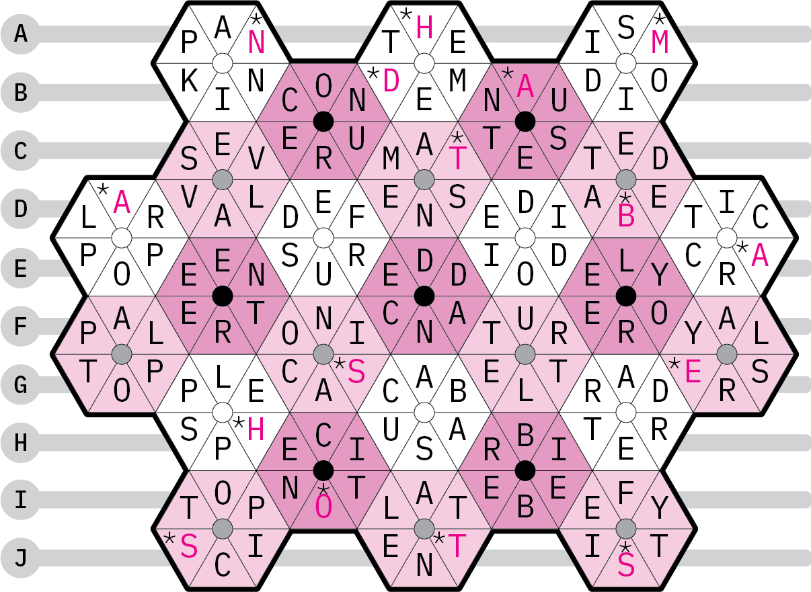
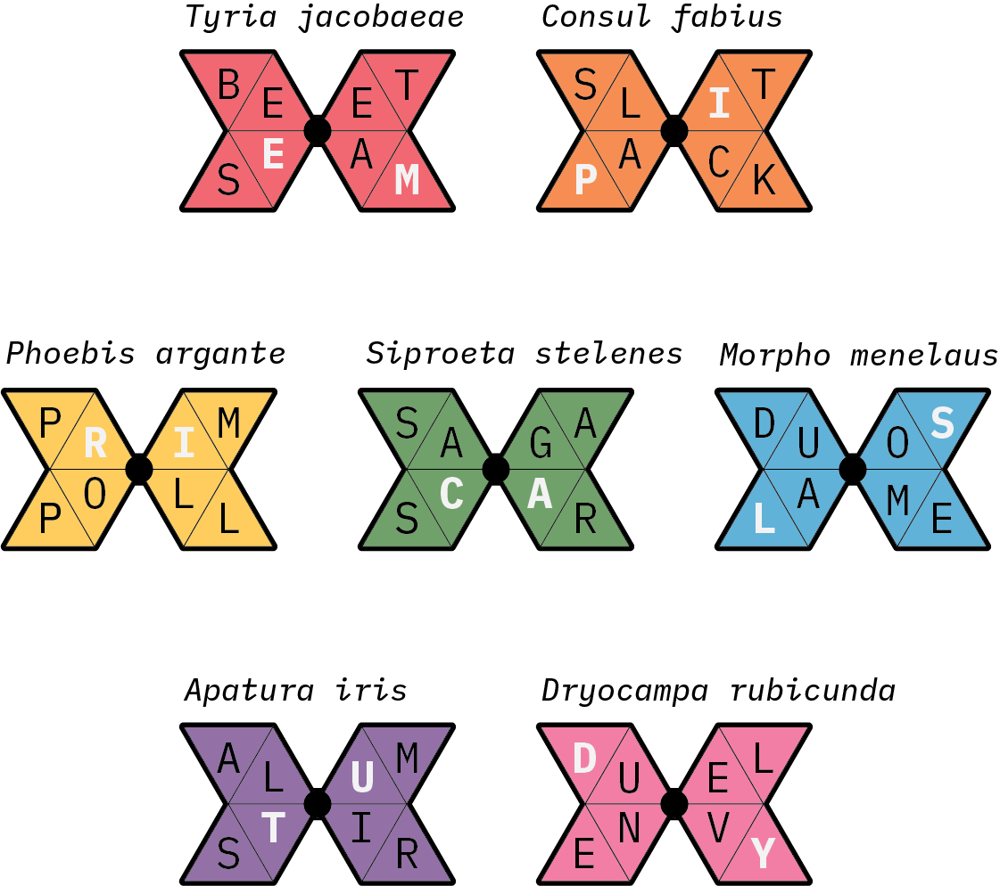

Solution: National Museum of Natural History
Answer: EMPIRICALSTUDY
Written by Dawson Do, Sam Lam and Ryan Thomas
This puzzle is a Rows Garden variant crossword. The first step is to fill out the grid. The cells noted with an asterisk spell out the phrase: NHM DATABASE HOSTS.

The butterflies can be filled out as follows. Using the NHM HOSTS database, each species of butterfly can be paired to a unique flower on the grid. The butterflies are also presented in rainbow order. Superimposing the letters on the butterflies with those on the grid reveals two matching letters per butterfly. These letters spell out the answer: EMPIRICAL STUDY
Author’s Notes
Dawson: Surprisingly, this idea came to me very quickly when I was doodling during a meeting. I had been sitting on the HOSTS database for a long time and decided this would be a really good time to use the lepidoptera dataset. Sam and I began constructing the grid, but the process was brutal. We eventually asked Ryan to help us bash the construction. It’s a long puzzle to get through, but we hope you enjoyed!
| Color | Butterfly | Flower | Letters |
|---|---|---|---|
| Red | Tyria jacobaeae | Compositae | EM |
| Orange | Consul fabius | Piperaceae | PI |
| Yellow | Phoebis argante | Leguminosae | RI |
| Green | Siproeta stelenes | Acanthaceae | CA |
| Blue | Morpho menelaus | Erythroxylaceae | LS |
| Purple | Apatura iris | Salicaceae | TU |
| Pink | Dryocampa rubicunda | Fagaceae | DY |